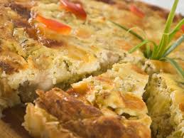
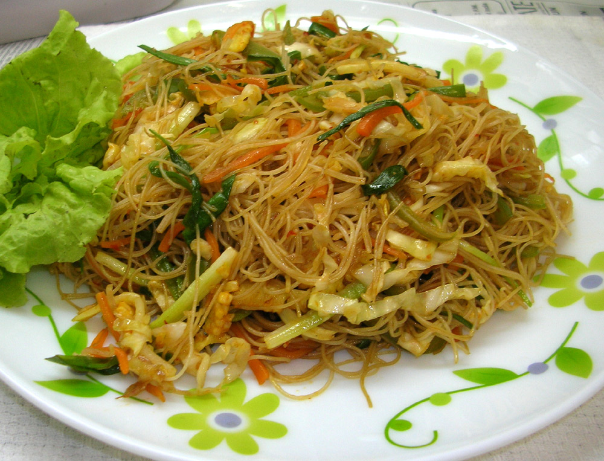
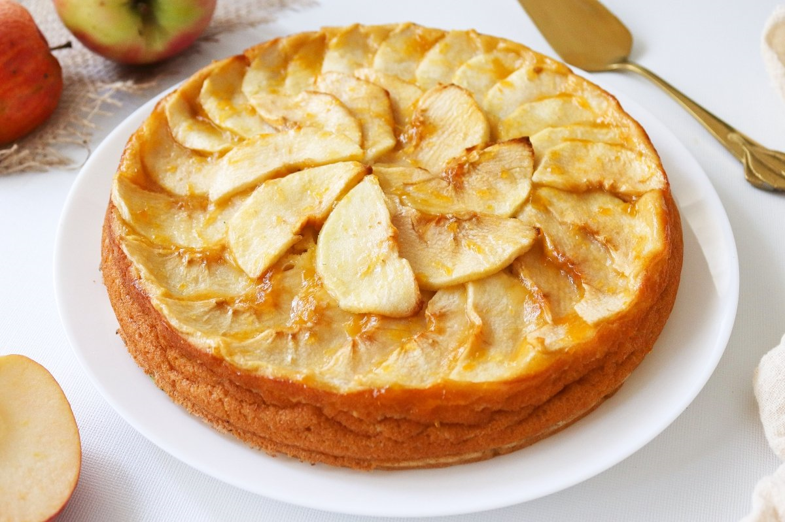
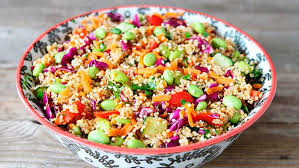

Pastel de Pollo Sin Gluten
 Ver recetaPastas de Arroz con Verduras
 Ver RecetaTarta de Manzana Sin Gluten
 Ver RecetaEnsalada de Quinoa y Verduras
 Ver RecetaPizza de Verduras Sin Gluten
 Ver Receta
Ver Receta
Ver Receta
Ver Receta